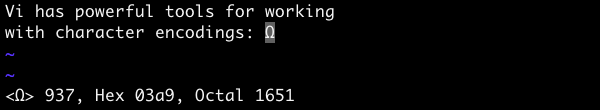

日期: 2012-07-11 21:07
原文:http://spin.atomicobject.com/2011/06/21/character-encoding-tricks-for-vim/
处理大量数据经常是一件具有挑战的事情，特别是这些数据用到多种字符编码或需要转换编码时。但幸运的是，一些类似vim的文本编辑器可以很好地处理这类问题。

Vim支持很多的字符编码，而且有一项加强的功能。比如,vim可以让你改变一个文件的编码，检查某种编码下无效的字符，查看一个字符的代码值。
当试图将文件从一种编码格式转换成另一种，或想识别出不可打印或无效字符， 或查看文件的原始二进制内容时，这项功能将及其有用。
下面是vim中一些与字符编码相关的有用的命令。记住中括号[]中的参数是可选的，而尖括号中的<>是必须提供的参数。
这个命令可以让你使用指定的编码打开或重新找开一个文件进行编辑。这将很有用，比如, 你正在编辑一个UTF-8编码的文件, 而vim却把它自动检测为Latin-1编码了。
和以特定的编码编辑文件类似，这个命令允许你以指定的编码保存一个文件。如果你想要以另外的编码保存一份文件这会很有用。比如，在vim中你以UTF-8编码写了一份文件，但是你想要以Latin-1编码保存它. 为了能以指定编码保存文件，在当前缓存中的字符需要在目标编码中是有效的。否则，这些字符不能被目标编码表示出来，而且可能发生数据丢失。（比如，希腊字符欧米加， Unicode:03A9 Ω 可以用UTF-8编码表示，而Latin-1却不能。）
这个命令将设置vim内部使用的编码，用于输入，缓存，寄存器等。默认会设置为UTF-8编码。如果未指定编码，该命令将显示当前使用的编码。
这个命令将指定用于保存文件编码。如果通过':set fileencoding'指定的编码和':set encoding'中的不同，vim会试图将文件内容从已存在的编码(':set encoding')转换为目标编码(':set fileencoding')。为了能以指定编码保存文件，在当前缓存中的字符需要在目标编码中是有效的。否则，这些字符不能被目标编码表示出来，而且可能发生数据丢失。（比如，希腊字符欧米加， Unicode:03A9 Ω 可以用UTF-8编码表示，而Latin-1却不能。）
这个命令可以显示当前光标下字符的代码值。你可以使用简单点的键盘上的快捷键'ga'。它会显示十进制，十六进制，八进制的代码值。比如，希腊字符欧米加，在utf-编码下，会显示: “<Ω> 937, Hex 03a9, Octal 1651”. ‘03a9’就是该字母unicode下的十六进制代码值.
这个命令会显示当前光标下字符的以十六进制表示的字节序列。这个不同于'ga'命令显示的代码值，代码值是一个字符在一个字符集内拥有的值。而这个命令显示的是真正的磁盘上的字节值--用于表示一个以某种编码的字符。比如，希腊字符欧米加，在utf-编码下，会显示: “ce a9”. “ce a9”是该字符utf-8下的十六进制，它不同于 “03 a9”代表的代码值.
这个命令用于显示当前文件中无效的字符。比如，在一个utf-8编码的文件中，包含一个字节或字节序列无法表示为一个有效的uft-8的字符，这个命令会把光标定位到这个地方。通常，vim会把这个无效字符显示为放在尖括号中的字节或字节序列的十六进制值，比如"<93>"。
上面这些命令是vim在处理字节编码时一些有用的特性。仔细看一遍vim的手册页找出更多方便的特性，比如使用xxd工具以十六进制的方式编辑文件，支持字节标签（BOM），还有修改键盘是如何编码键入值的。